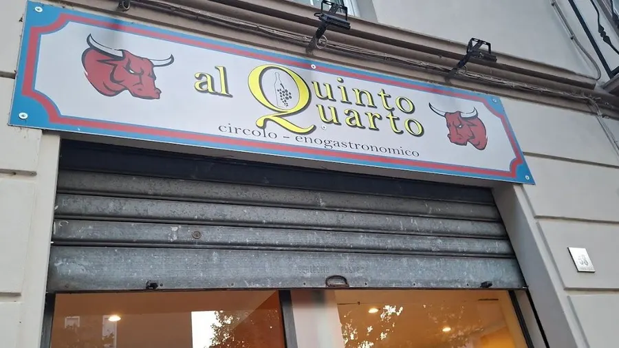

I coperti sono pochi: meglio chiamare.
Via Fratelli Rosselli, 58, 27058 Voghera (PV)
| Giovedì | 19:00–21:45 |
|---|---|
| Venerdì | 19:00–21:45 |
| Sabato | 19:00–21:45 |
| Domenica | 12:00–14:00 · 19:00–21:45 |
| Lunedì | Chiuso |
| Martedì | Chiuso |
| Mercoledì | Chiuso |

Prima di venire
Come si prenota Al Quinto Quarto?
Con una telefonata allo 0383 175 0601. I coperti non sono molti: per il venerdì e il sabato sera conviene chiamare qualche giorno prima.
Quando siete aperti?
A cena il giovedì, il venerdì e il sabato, dalle 19 alle 21:45. La domenica anche a pranzo, dalle 12 alle 14, oltre alla cena. Lunedì, martedì e mercoledì siamo chiusi.
Dove si trova il locale?
In Via Fratelli Rosselli 58 a Voghera: sopra la vetrina c’è l’insegna con i due tori.